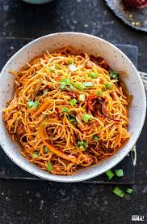

Noodles Recipe

This noodles recipe is by far the greatest recipe ever made wihtin the noodle culture. It;s better than any other noodles out there to be honest. And it's not close.
This noodles recipe also is ONE OF A KIND, so please eat it with respect.
Ingredients
- 1 pound ground beef
- ½ cup chopped onion
- 2 (14.5 ounce) cans Italian-style stewed tomatoes
- 2 (10.5 ounce) cans beef broth
- 1 (16 ounce) package mixed vegetables
- 1 teaspoon dried oregano
- ½ teaspoon salt
- ¼ teaspoon ground black pepper
- 1 cup dry medium egg noodles
Steps
- Step 1
- Heat a large Dutch oven or soup pot over medium-high heat. Cook and stir beef and onion in the hot skillet until beef is browned and crumbly, 5 to 7 minutes. Drain and discard grease.
- Step 2
- Stir tomatoes, broth, vegetables, oregano, salt, and pepper into the pot. Bring to a boil.
- Step 3
- Add egg noodles and reduce heat to medium-low. Cover and cook until noodles are tender, 10 to 15 minutes.